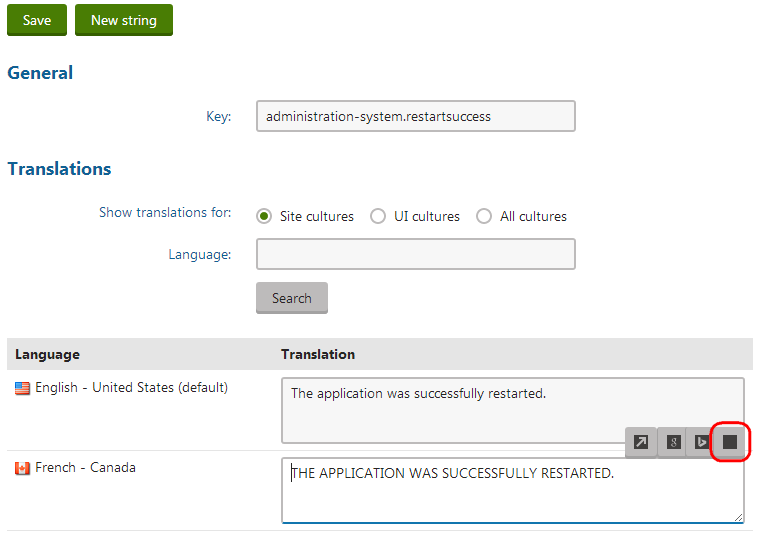

Creating machine translation services
To develop a custom machine translation service, you need to define a class that inherits from AbstractMachineTranslationService (found in the CMS.TranslationServices namespace).
The service class must override and implement the following abstract methods:
|
Method |
Description |
|
Translate |
The main translation method which calls the appropriate web service (Google Translator, Microsoft Translator etc.) or otherwise translates the specified text from the source language into a target language. When a user submits a translation to the service, the system calls the Translate method for every translation unit (<trans-unit> element) in the XLIFF source data. The method's text parameter contains the source text of the unit. |
|
Detect |
You can use this method to call the logic of the translation service to automatically determine the language of the source text. Kentico does not use the Detect method by default, but you can implement it if you need language detection functionality in your custom API. |
|
Speak |
Converts text to a stream of sound using the given service's text-to-speech engine. Kentico does not use the Speak method by default, but you can implement it if you need text-to-speech functionality in your custom API. If your service does not support such an option, throw a not implemented exception. |
|
IsAvailable |
Checks whether the service is appropriately configured and ready to be used. For example, you can confirm that the target service is currently online, or load any credentials and API keys required by the service from the website settings and confirm their validity. The system only offers the service when translating pages and resource strings if the IsAvailable method returns a true value. |
Kentico EMS required
Features described on this page require the Kentico EMS license.
Defining machine service classes
This example demonstrates how to write a class providing functionality for a machine translation service. The sample class does not use a real translation service, it only converts the source text to upper case. When creating your own classes, replace the code of the methods with your own translation logic or call the API of the appropriate web service.
Open your web project in Visual Studio.
Add a new class into the App_Code folder (or Old_App_Code on web application installations). For example, name the class SampleMachineTS.cs.
Edit the class and change its code to the following:
using System;using System.IO;using CMS.TranslationServices;/// <summary>/// Sample machine translation service./// </summary>publicclassSampleMachineTS : AbstractMachineTranslationService{/// <summary>/// Translates the specified text from the source language to the target language./// Must return the translated text as a string./// </summary>/// <param name="text">Text to translate</param>/// <param name="sourceLang">Source language culture code</param>/// <param name="targetLang">Target language culture code</param>publicoverride string Translate(string text, string sourceLang, string targetLang){// "Translates" the text to upper case.returntext.ToUpper();}/// <summary>/// Automatically attempts to detect the language of the source text./// Returns the culture code of the detected language./// </summary>/// <param name="text">Text to be processed</param>publicoverride string Detect(string text){// Use your service to detect the language. This example always returns English.return"en-US";}/// <summary>/// Returns a stream of sound generated by text-to-speech services (if supported)./// </summary>/// <param name="text">Text to be processed</param>/// <param name="lang">Culture code of the text's language</param>publicoverride Stream Speak(string text, string lang){// This service provider does not support Text-to-speech.thrownewNotImplementedException();}/// <summary>/// Checks the necessary prerequisities needed for the service to work,/// e.g. availability of credentials for connecting to the service etc./// </summary>publicoverride bool IsAvailable(){// This sample provider does not require any settings and does not depend on// any other services, therefore is always available.returntrue;}}The system calls the methods of the class as needed when the given translation service is used.
_Follow the instructions on the Loading translation service classes from App_Code page to ensure that the application can access the custom class.
Registering machine services in the system
Once you have implemented the class with the required functionality, you need to register the translation service:
Log in to the Kentico administration interface.
Open the Translation services application.
Click New translation service.
Enter the following values into the service's properties:
Display name: Sample machine service
Code name: Leave the (automatic) option. The system generates the code name as SampleMachineService (based on the display name).
Service provider - Assembly name: (custom classes)
Service provider - Class: SampleMachineTS
Is machine translation service: Yes (checked)
Service is enabled: yes (checked)
Click Save.
The service is now ready to be used.
Result
When submitting pages for translation, users can select the Sample machine service as one of the translation service options. Using this option creates the new language version of the page as a copy of the original content, with all characters converted to upper case.
Users can also call the custom translation service when localizing resource strings.

'Translating' a resource string using the sample service
Changing the translation service icon
The system uses font icons for the graphics representing machine translation services in the localization dialog. If you wish to change the icon of your custom machine service, add a font icon using a class name in the following format: icon-<translation service code name>